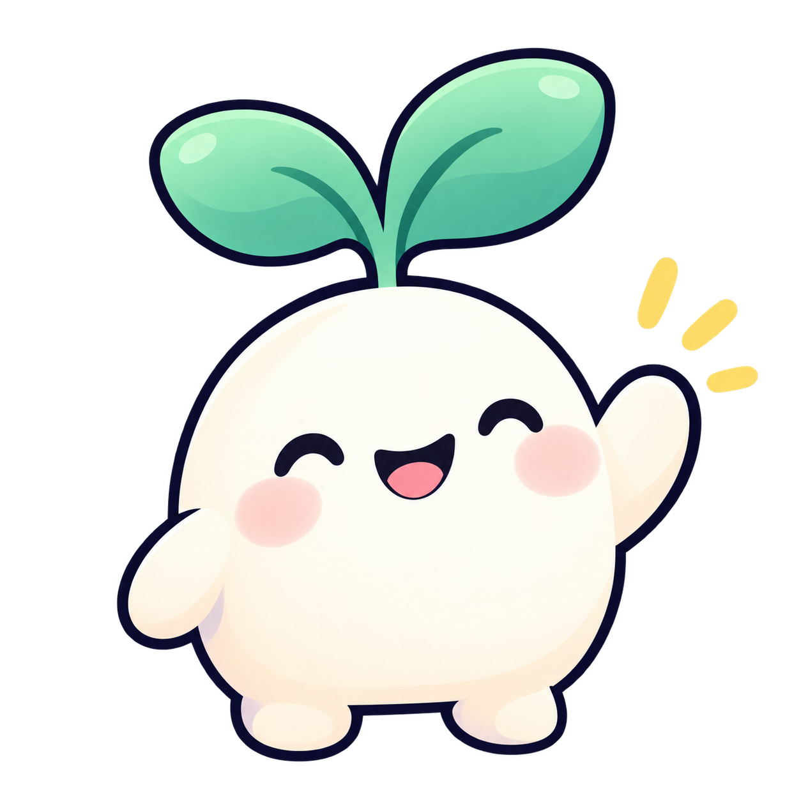

Нет связи · No connection
Bloom подключится сам, как только появится интернет.
Bloom will reconnect as soon as you're online.

Bloom подключится сам, как только появится интернет.
Bloom will reconnect as soon as you're online.